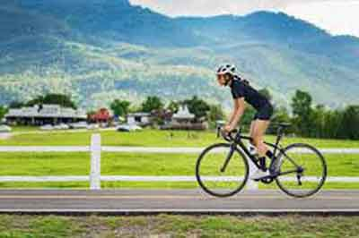

 Why we are your spokes People by the Cadel Evans “In Mendrisio I felt it – the exhilaration of what the bike has to offer. It’s a simple machine that conjures a vast mix of emotions. It can evoke the senses and raise the spirits of people who watch. For those who ride it can seem like the perfect vehicle for transport. For those who race, there’s no better sensation than being on top of your gear making mountains feel like flat roads. Cycling throws up plenty of obstacles, unknown territory, high speed split-second considerations. Where to next? What’s around the next corner? Who cares? You’re flyin’!”